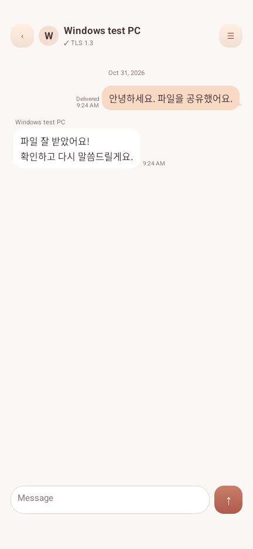

01 / FILES
하나씩도. 한꺼번에도.
여러 파일을 놓으면 하나의 링크가 바로 복사돼요. 받는 사람은 파일명 옆에서 개별 다운로드하거나, 전체 ZIP으로 한 번에 받을 수 있어요.
중앙 서버 없이, 기기 간 직접 연결
파일·캡처·긴 텍스트는 복사한 뒤 알림을 눌러 링크로 공유하세요. 확인한 상대와 1:1 메시지, Windows 그룹 대화도 직접 주고받을 수 있어요.
Windows 11 · x64/단일 EXE/인트라넷 P2P 공유·대화
QUICK SHARE
파일·이미지·긴 텍스트를 링크로 전하세요.
이해를 돕기 위한 UI 예시입니다.
공유도 메시지도, 중앙 서버 없이.
복사한 파일·이미지·텍스트를 링크로 전하고, Sailfish 안에서 메시지를 주고받으세요. Windows와 Android는 1:1 메시지를, Windows끼리는 그룹 대화를 지원합니다. 연결 가능한 기기끼리 직접 통신해요.
손에 익은 세 번의 움직임
아래 화면에서 직접 체험해 보세요. 파일 선택부터 메시지에 붙여넣기까지.
무엇을 전하든, 자연스럽게
여러 파일을 놓으면 하나의 링크가 바로 복사돼요. 받는 사람은 파일명 옆에서 개별 다운로드하거나, 전체 ZIP으로 한 번에 받을 수 있어요.
영역, 전체 화면, 창 선택까지. 별도 캡처 앱 없이 화면을 담고, 완료되는 순간 전송 링크를 클립보드에 넣어드려요.
긴 코드와 메모를 링크로 전하세요. 브라우저에서 읽고, 텍스트만 복사하거나 .text 파일로 내려받을 수 있어요.
// a little less friction
const share = {
files: "the whole project",
image: "your next idea",
text: "every single line"
};
return aLink(share);큰 파일을 위한 작은 설계 차이
가상 PC 이미지처럼 큰 파일도 64비트 범위 처리로. Sailfish 앱으로 받을 때는 파일을 여러 구간으로 나눠 병렬 수신하고, 완료한 구간은 재개할 때 다시 받지 않아요.
전송 속도는 네트워크 대역폭, 디스크 성능, 보안 정책에 따라 달라집니다. 특정 속도를 보장하지 않습니다.
병렬 수신 구조의 개념도 · 속도 측정 화면이 아닙니다
작은 부분까지, 내 흐름에 맞게
Ctrl+Alt+S 또는 상단 스위치로 클립보드 감시를 전환해요. 새로 실행하면 항상 ON으로 시작하고, OFF는 현재 실행에만 적용돼요.
빠른 링크를 켜면 Ctrl+Shift+C로 선택한 파일·텍스트를 복사하고 링크를 만들어요. 다른 전역 단축키와 충돌하면 등록하지 않아요.
기본 24시간, 1시간·4시간 만료를 선택해요. 파일별 다운로드 횟수를 제한하거나 링크를 삭제할 수 있고, 이미 시작한 전송은 완료하도록 유지해요.
링크별로 접힌 목록에 진행률·평균 속도·유효 시간을 확인해요. 펼치면 개별 파일과 수신 PC 정보를 볼 수 있어요.
밝은 낮에도, 늦은 저녁에도
한·영 언어 지원과 라이트·다크 테마. 부드러운 색감 안에 필요한 정보는 또렷하게.
SAILFISH v1.0.32
Windows 11 x64용 Sailfish. ZIP 안의 단일 실행 파일로 시작하세요.
배포 파일 확인 중릴리스 목록에서 확인하기 ↗알아두면 좋은 시작 안내
Windows 11 · Unicode · x64. 별도 MFC/CRT 설치 없이 단일 EXE로 실행됩니다.
초기 방화벽 등록에는 관리자 승인이 필요합니다. 사내 네트워크와 보안 정책이 직접 연결을 허용해야 합니다.
보내는 PC가 켜져 있어야 링크를 사용할 수 있어요. 양쪽 앱을 실행하면 프로그램 간 수신과 메시지도 연결됩니다.
SAILFISH ANDROID · 1.0.31
공유 메뉴에서 파일과 이미지를 전하고, Windows와 암호화 메시지를 이어가세요. PC와 같은 Sailfish 아이콘, 편안한 라이트·다크 테마를 담았습니다.
Android 10 이상 · APK 직접 설치 · 한글/영어 · 무료
Android APK 다운로드 ↓앱 업데이트도 같은 서명키로 제공됩니다. 다운로드·검증 후 Android 설치 화면에서 승인하세요. 양쪽 기기가 연결 가능한 네트워크가 필요합니다.

시작하기 전에
파일, 이미지, 텍스트 공유 링크는 브라우저로 열고 내려받을 수 있습니다. 프로그램 간 병렬 수신과 1:1 메시지를 사용하려면 양쪽에 Sailfish가 실행 중이어야 합니다.
Sailfish는 서로 직접 연결 가능한 인트라넷 환경을 전제로 합니다. 라우팅, 방화벽, VPN, 보안 정책에 따라 접근이 제한될 수 있으며 인터넷 중계 서버는 제공하지 않습니다. 보내는 PC와 프로그램은 실행 중이어야 합니다.
파일 공유는 보내는 PC에서 받는 쪽으로 직접 진행합니다. 캡처와 텍스트 공유용 임시 파일 및 메시지 기록은 로컬 사용자 폴더에 저장됩니다. GitHub는 프로그램 배포·업데이트와 이 소개 페이지에 사용됩니다.
링크를 통한 파일 공유는 HTTP입니다. 메시지와 메시지 첨부는 TLS 1.3으로 전송하고 Windows 대화 기록은 현재 사용자 계정의 DPAPI로 보호합니다. 등록 요청의 상대를 확인한 뒤 수락하고, 필요한 경우 양쪽 인증 코드를 비교하세요.
현재 실행 중에는 Ctrl+Alt+S 또는 상단 스위치로 끌 수 있습니다. 다시 시작하면 항상 ON입니다. 감시 OFF 상태에서도 파일 드롭, 파일 선택과 사용자가 켠 빠른 링크 기능은 사용할 수 있습니다.
메시지 수신 거부와 파일 공유 권한은 별개입니다. 공유 링크를 더 이상 사용하지 못하게 하려면 공유 목록에서 해당 링크를 삭제하세요. 이미 시작한 전송은 완료할 수 있습니다.
오래 편안하게 쓰기 위한 약속
공개 릴리스 저장소의 ZIP과 버전 정보가 배포 기준입니다. 릴리스와 검증 정보가 준비된 후 다운로드를 안내하며, 같은 버전의 파일을 조용히 바꾸지 않습니다.
시작 시와 4시간마다 새 버전을 확인합니다. 알림을 눌러 ZIP을 받은 뒤 바로 또는 실제 종료 시 적용을 선택하세요. 트레이로 숨기는 것은 종료가 아닙니다.
프로그램 교체와 로컬 설정·대화·수신 자료는 구분합니다. 업데이트 정책과 릴리스 변경 내용을 확인한 뒤 적용할 수 있습니다.